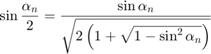
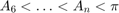
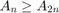

Computation of , stable version
We rewrite the recurrence relation as

oldA=0;s=sqrt(3)/2; newA=3*s; n=6; % initialization z=[newA-pi n newA s]; % store the results
The stopping criterion

However, this cannot be true forever in finite precision arithmetic, since there is only a finite set of machine numbers. Thus, the situation  must occur at some stage, and this is the condition to stop the iteration. Note that this condition is independent of the machine, in the sense that the iteration will always terminate as long as we have finite precision arithmetic, and when it does terminate, it always gives the best possible approximation for the precision of the machine.
while newA>oldA % quit if area does not increase oldA=newA; s=s/sqrt(2*(1+sqrt((1+s)*(1-s)))); % new sine value n=2*n; newA=n/2*s; z=[z; newA-pi n newA s]; end m=length(z); disp(" n A err ") for i=1:m fprintf('%10d %20.15f %20.15f\n',z(i,2),z(i,3),z(i,1)) end
n A err
6 2.598076211353316 -0.543516442236477
12 3.000000000000000 -0.141592653589793
24 3.105828541230249 -0.035764112359544
48 3.132628613281238 -0.008964040308555
96 3.139350203046867 -0.002242450542926
192 3.141031950890509 -0.000560702699284
384 3.141452472285462 -0.000140181304332
768 3.141557607911857 -0.000035045677936
1536 3.141583892148318 -0.000008761441475
3072 3.141590463228050 -0.000002190361744
6144 3.141592105999271 -0.000000547590522
12288 3.141592516692156 -0.000000136897637
24576 3.141592619365383 -0.000000034224410
49152 3.141592645033690 -0.000000008556103
98304 3.141592651450766 -0.000000002139027
196608 3.141592653055036 -0.000000000534757
393216 3.141592653456104 -0.000000000133690
786432 3.141592653556371 -0.000000000033422
1572864 3.141592653581438 -0.000000000008355
3145728 3.141592653587705 -0.000000000002089
6291456 3.141592653589271 -0.000000000000522
12582912 3.141592653589663 -0.000000000000130
25165824 3.141592653589761 -0.000000000000032
50331648 3.141592653589786 -0.000000000000008
100663296 3.141592653589791 -0.000000000000002
201326592 3.141592653589794 0.000000000000000
402653184 3.141592653589794 0.000000000000001
805306368 3.141592653589794 0.000000000000001